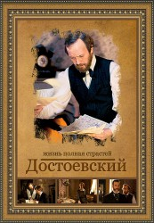

")
Alternativ: Dostoevskiy
 
 IMDB-Wertung: 7.5 / 10
IMDB-Wertung: 7.5 / 10  Metascore:
Metascore: 
Knapp der Hinrichtung entronnen, wird der Schriftsteller Fjodor Dostojewski zu vier Jahren Haft im sibirischen Arbeitslager verurteilt. Die Erfahrung prägt ihn tief, das neu gewonnene Verständnis für das Leid des einfachen Volkes verändert auch seine Werke. Dostojewskis eigene Geschichte beginnt in der tiefsten Provinz des russischen Reiches. Sein Roman „Schuld und Sühne“ wurde 17 Mal verfilmt, nun steht der russische Schriftsteller Fjodor Dostojewski (1821 – 1881), einer der Großen der Weltliteratur, selbst im Mittelpunkt einer siebenteiligen russischen Fernsehserie. Die russische Mini-Serie Dostojewski erzählt in 7 Teilen vom Leben des berühmten Schriftstellers, von seiner beinahen Hinrichtung, den Jahren in einem sibirischen Arbeitslager und der schwierigen Zeit danach.
Jahr: 2011
Dauer: 61 Minuten
FSK:
Land: Russland Studio: ArteTonspuren:
Untertitel:
Auflösung: 720p (1280x720) Größe: 1966 MB
Genre: TV-Serie
Regisseur: Vladimir Khotinenko
Drehbuch: Telekanal Rossiya
Soundtrack:
Darsteller:
Datei: X:\HD-Serien\Dostojewski\Dostojewski (1_7).mkv seit 16.02.2018
Festplatte: HD Serien(A-H)
 Es gibt insgesamt 182 Filme in der Gruppe 'HD-Serien'
Es gibt insgesamt 182 Filme in der Gruppe 'HD-Serien'